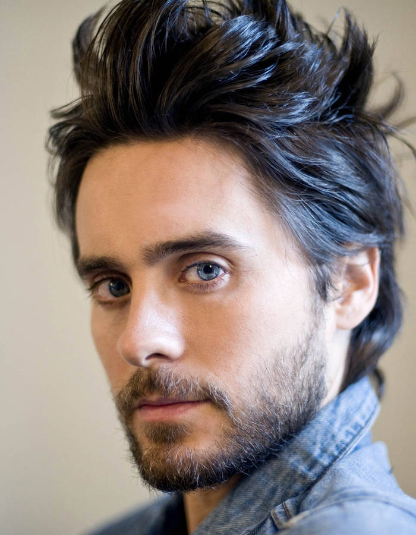
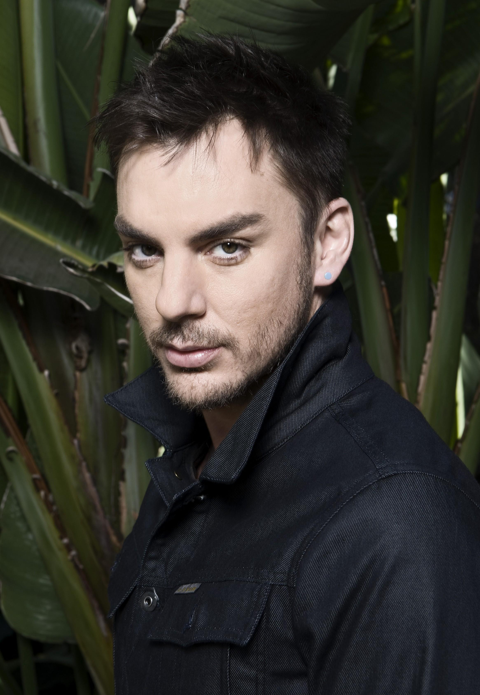
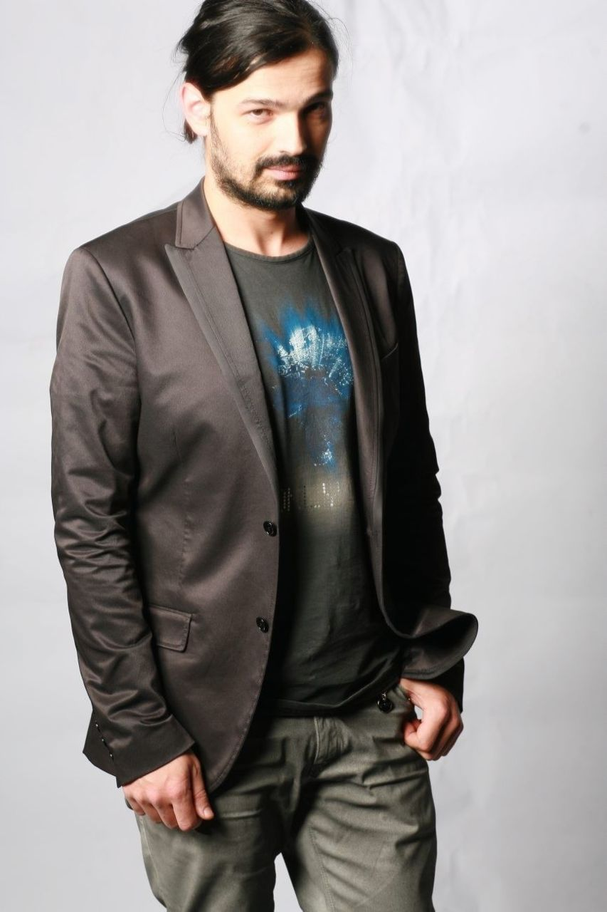

Biographies
Thirty Seconds to Mars, communément appelé 30 Seconds to Mars, est un groupe de rock alternatif américain, originaire de Los Angeles, en Californie. Formé en 1998, le groupe est constitué de Jared Leto pour le chant et la guitare, de Shannon Leto à la batterie et aux percussions et de Tomo Miličević à la guitare aussi.
|  | Jared Joseph Leto, né le 26 décembre 1971 à Bossier City en Louisiane, est un acteur, chanteur, producteur, musicien, entrepreneur et mannequin américain, qui a commencé sa carrière d'acteur dans la série télévisée américaine Angela, 15 ans (My So Called Life) et a joué comme acteur principal dans Requiem for a Dream, Mr. Nobody et dans un second rôle dans Dallas Buyers Club. |
Shannon Christopher Leto est né le 9 mars 1970 à Bossier City en Louisiane. Il est le batteur du groupe et le frère de Jared mais également photographe et acteur. |  |
|  | Tomislav "Tomo" Miličević est né le 3 septembre 1979 à Sarajevo en Bosnie-Herzégovine. Croate, sa famille a émigré aux États-Unis pour s'installer à Détroit dans le Michigan quand Tomo avait 8 ans. Il est le guitariste du groupe depuis le 8 février 2003. Il a une sœur, l'actrice Ivana Miličević. |